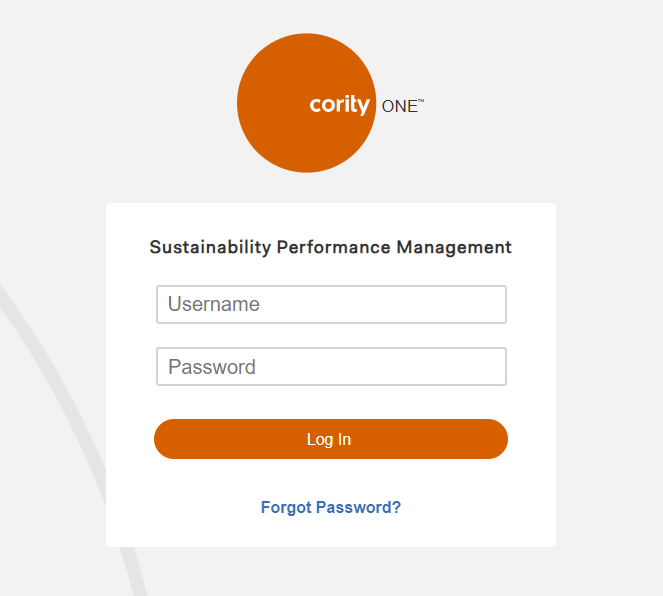
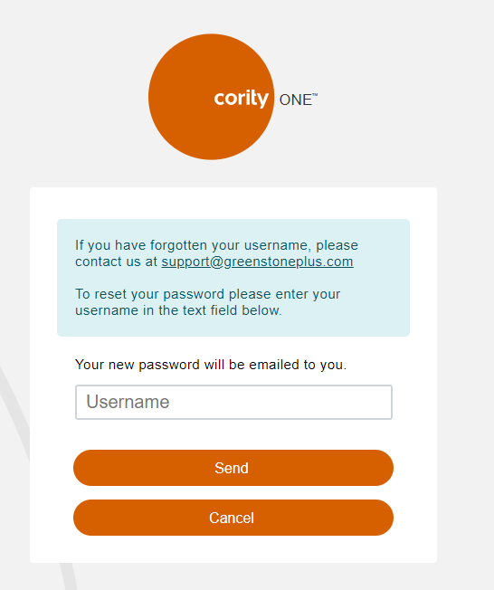
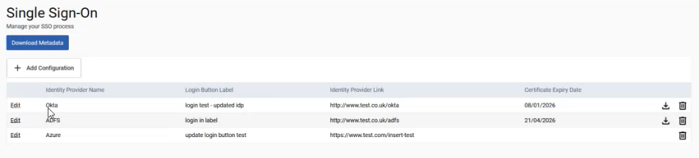

Enter your Username, which is likely to be your email address, and your password and click Log In.

If you have forgotten your password, select Forgot Password?, enter your username and click Send. A temporary password will be emailed to you.

Note: If it is the first time you have logged in or you have had your password reset, then you will be required to change your password immediately after login.
SSO can be enabled at the client level for all users.
This can be configured by your Administrator using the Admin Settings > Single Sign-On page.

On the new page, your Administrator can simply click Add Configuration and then specify:
Once configured, the page will be used by the system to authenticate (validate) all users.
The Admin page also has a toggle that if set to on will require SSO users to log in by SSO. If toggled on, a simple user name and password will not be allowed.
If you have any issues configuring SSO, reach out to the Cority Support team.
Two-factor authentication (2FA) can be enabled at the client level for all users. This can be configured for you by the Cority DevOps Team. If you would like to enable 2FA, reach out to the Cority Support team.
When logging into SPM, 2FA users will receive a prompt to select their preferred 2FA authentication method. This will send a security code to the phone number or email address associated with the user account. If your organization uses SSO with SPM and you are registered as an SSO user, you must log in through your organization's internal portal.